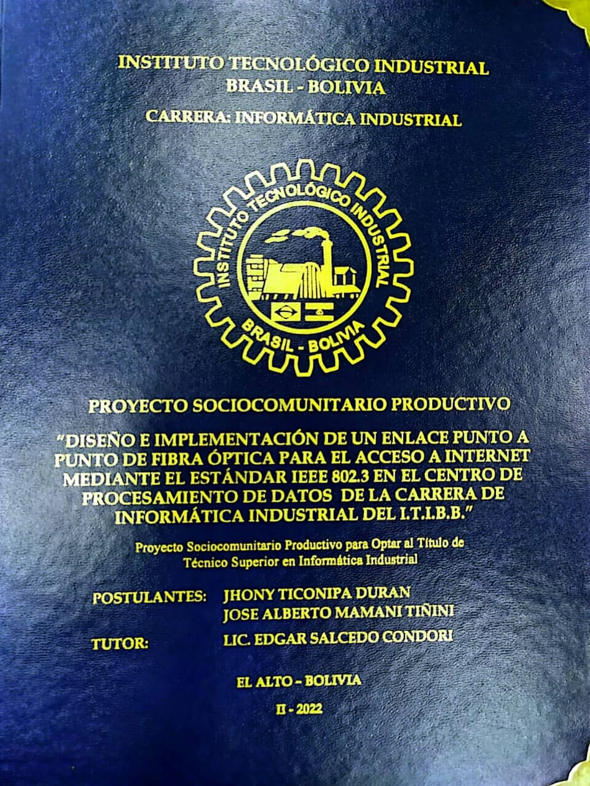

|

|
POSTULANTES Duran, Jhonny, Mamani Tiñini, Jose A.TUTORTiconipa DuranTITULO
Diseño e implementación de un enlace punto a punto de fibra óptica para el acceso a internet mediante el estándar IEEE 802.3 en el centro de procesamiento de datos de la carrera de informática industrial del I.T.I.B.B. Proyecto Sociocomunitario Productivo para optar al título de Técnico Superior en Informática Industrial. Instituto Tecnológico Industrial Brasil – Bolivia. El Alto, La Paz. Bolivia. II-2022.Diseño e implementación de un enlace punto a punto de fibra óptica para el acceso a internet mediante el estándar IEEE 802.3 en el centro de procesamiento de datos de la carrera de informática industrial del I.T.I.B.B. Proyecto Sociocomunitario Productivo para optar al título de Técnico Superior en Informática Industrial. Instituto Tecnológico Industrial Brasil – Bolivia. El Alto, La Paz. Bolivia. II-2022. |